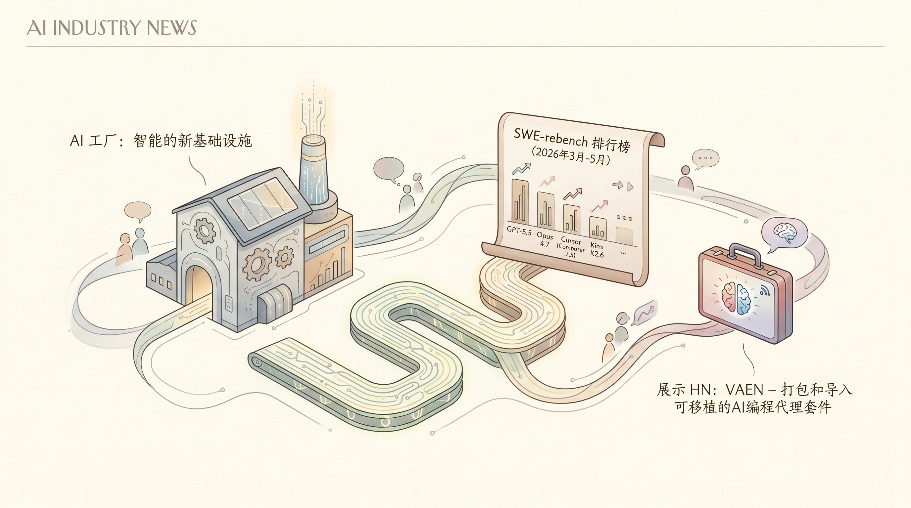

NVIDIA阐述AI工厂概念，称其将电力实时转化为智能，AI工厂本质是Token工厂，企业部署AI代理时每瓦性能和每Token成本将成为关键经济指标。
两克伴AIGC日报
2026-05-28 星期四

本期关注：AI工厂：智能的新基础设施、SWE-rebench 排行榜（2026年3月、4月和5月）：GPT-5.5、Opus 4.7、Cursor（Composer 2.5）、Kimi K2.6 等更多模型、展示 HN：VAEN – 打包和导入可移植的AI编程代理套件、Gary Marcus, MIT PhD and NYU Professor Emeritus
📰 行业动态
🔥 今日焦点
SWE-rebench刚刚更新了3月至5月的排行榜，这次带来了更大规模、更高质量的编程任务测试集。GPT-5.5、Opus 4.7、Cursor Composer 2.5、Kimi K2.6等模型同台竞技。值得注意的是，这次更新意味着我们终于有了对新一代模型编程能力的系统评估。对于关注AI编程进展的读者来说，这是目前最权威的能力参照——它不是考你概念理解，而是真刀真枪的软件工程任务。如果你在选型或者评估自己团队用哪个模型做coding副手，这份榜单值得花时间研究一下。
---
今天看到一个有意思的开源工具叫VAEN，解决的是一个实际痛点：AI coding agent的工作流配置好后很难迁移。这个CLI工具帮你把整个 harness 打包成可移植的形态——说白了就是让你的agentic工作流「拎包入住」。对于需要频繁切换模型或者在多环境部署AI编程工具的团队来说，这个思路很实用。而且是开源的，GitHub上可以直接拉下来试试。如果你经常折腾agent配置但受够了「换个环境就报一堆依赖错」，可以关注一下这个项目。
🐦 Ta们说
> "The best pitch test: can you tell this at a bar to a friend?
Not the market size, not the TAM, not the deck. Just the story. Why you built it. What you saw that nobody else saw. What happened.
> "Starbucks learned the hard way: you literally can’t even trust (current) AI to count."
**解读**: Gary Marcus 说星巴克用AI做库存盘点，结果连「数数」都出错——这直接戳破了当前AI「什么都能做」的过度宣传。他这句挺犀利的：在那些需要精确、可预测输出的场景里，LLM依然靠不住。背景补充：Marcus一直是对AI hype泼冷水的代表人物，他的批评虽然刺耳，但每次都有具体案例支撑。
> "“Tokens got burned for millions of dollars without any real significant ROI to show for it.”
hearing this over and over again"
🛠️ 产品推荐
这是一款深度解析 Anthropic Claude Code $200 订阅计划成本结构的分析工具。该项目通过详细的 API 费用对比计算，揭示了订阅制相对于按量付费的巨大价格优势——$200 月费相当于为用户提供了约 17 倍的原始 API 成本补贴。
产品核心功能聚焦于成本透明化，将 Claude Code 的定价机制进行量化拆解，让开发者清晰了解在高频使用场景下选择订阅计划的实际收益。分析内容涵盖 token 消耗计算、不同使用量级的费用对比，以及订阅模式的经济学逻辑。
这是一款开源的AI驱动学习平台，旨在成为Duolingo的开源替代品，但功能更为强大——它不局限于语言学习，而是支持用户学习任何主题。
核心亮点在于其AI自动化能力：用户只需输入想学习的内容，系统即可自动生成完整的交互式课程，从入门到精通全程覆盖，甚至包括量子物理等复杂学科。